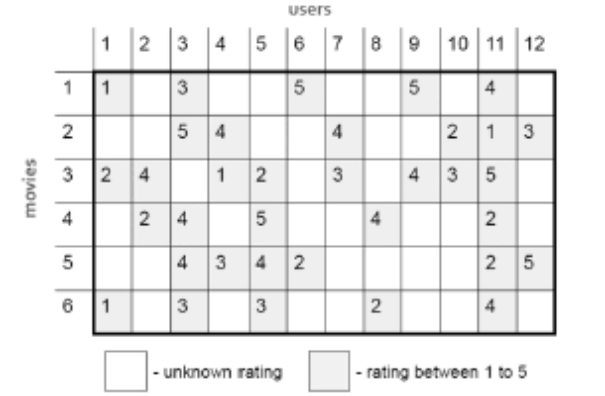

推荐系统由来已久, 在过往的时代背景下, 可能由于数据, 计算资源, 算法等方面的限制, 采用的是一些相对简单的方法, 这些方法一般来说可解释性强, 硬件环境要求低, 易于快速训练与部署.
传统方法实现了从零到一的突破, 为后来的方法提供了基础与思路, 并且其中一些方法即使在今天也仍在使用.
本篇主要介绍协同过滤算法.
说到推荐系统, 必然离不开协同过滤(Collaborative Filtering), 顾名思义, “协同过滤”就是协同大家的反馈, 评价和意见, 来一起对海量的信息进行过滤, 从中筛选出用户可能感兴趣的信息的推荐过程.
或者更加通俗地来说, 就是根据过往用户与物品的记录, 来找相似, 可以找相似的用户, 也可以找相似的物品来进行推荐.
算法原理
算法流程
协同过滤算法的流程比较简单, 主要分为以下几个步骤:
- 收集整理用户的偏好(包括评分, 浏览记录, 购买记录等).
- 根据以上数据, 找到相似的用户或物品.
- 根据相似度进行筛选, 推荐.
具体来说, 分别以用户和物品为维度, 可以构建一个二维矩阵, 在这个矩阵中的每个元素, 代表着用户对物品的评价(打分), 或者行为(是否购买/观看).

如上图, 每一个格子表示对应用户对一部电影的评分, 而一些格子是空的, 表示用户未观看或者未评分.
通过这个共现矩阵, 可以想办法获取表征用户或者物品的向量, 再通过相似度计算, 就可以找到兴趣相似的用户或者属性相当的物品, 从而进行推荐.
下面分别介绍基于用户, 和基于物品的协同过滤算法.
相似度指标
首先介绍一些相似度指标.
给定两个向量,
计算其相似度的方式有很多, 总体说来有以下几类:
欧式距离.
其取值范围为$[0,\infty)$, 而一般相似度的度量结果希望在$[-1,1]$或者$[0,1]$之间, 所以可以进行转换:
欧式距离衡量的是空间中两个点的绝对差异.
余弦相似度.
其取值范围为$[-1,1]$, 与向量的长度无关, 而与两个向量的夹角相关, 夹角越小, 相似度越大.
所谓遇事不决, 余弦相似.
余弦相似度在度量文本相似度, 用户相似度, 物品相似度时都比较常用.
皮尔森相关性.
相比余弦相似度, 皮尔森相关性将每个向量使用自身均值进行平移. 比如一些用户对电影整体打分偏高, 一些用户偏低, 此时这种减去均值后再计算相似度的做法可能更有效.
杰卡德(Jaccard)相似度.
当向量为布尔型, 即只包含0, 1时, 可以使用杰卡德相似度.
或者仿余弦相似度:
此外, 考虑到活跃/非活跃用户, 热门/非热门物品的影响, 可以进一步对协同过滤的相似度做改进.
对于物品协同的相似度, 做归一化处理:
这里可以这么理解, 有的类型的物品整体和别的物品相似度低, 而有的整体高, 那么如果直接使用未归一化的相似度加权, 那些相似度高(比如一些热门物品), 就可能占据了整个推荐列表. 实验表明, 在使用归一化相似度后, 在覆盖度上有增加, 流行度上有降低.
以仿余弦相似度来说, 还可以改变相似度的形式, 如:
当$\alpha=0.5$时, 与原相似度等价. 当$\alpha>0.5$时, 会增加对活跃用户或者热门物品的惩罚, 随着$\alpha$的增加, 覆盖度增加, 流行度降低.
更复杂一些的形式如下:
这个相似度中, 同时考虑了热门物品与活跃用户, 比如$p$与$q$表示两个物品对应的用户集合, 在分子中, $u$为$p$与$q$的交集用户, 若其为活跃用户, 则$|u|$就较大, 其对分子的贡献就小.
用户协同
UserCF核心思想是, “兴趣相似的朋友喜欢的物品, 我也喜欢”. 因此, 首先通过用户向量, 找到 Top-N相似的用户, 然后根据相似用户的已有评价对目标用户的偏好进行预测.
而具体来说, 可以拿用户对所有物品的评分向量, 作为计算其相似度的因子. 如果采用余弦相似度, 皮尔森相关性等, 可以将未知评分设置为0, 但是这样看起来就像是用户给这个物品打了一个很低的分数一样. 或者更加科学的做法是将其设置为其它值, 如某个物品所有的分数的均值, 作为其缺失的填充值.
若使用布尔型的杰卡德相似度或者仿余弦相似度, 则根据每个用户对应的物品集合来进行计算.
在有了用户与用户之间的相似度以后, 当要为某个用户进行推荐时, 首先挑选出K个与该用户最相似的用户, 对应的有这K个用户的物品集合. 对物品集合中的每个物品, 其感兴趣程度按下式计算:
其中的$rating_{v,i}$表示用户$v$对物品$i$的评分.
然后对物品集合根据感兴趣程度进行排序, 将Top-N作为推荐结果.
物品协同
ItemCF的计算流程与UserCF类似, 首先获取物品之间的相似度矩阵, 在物品协同这里, 用物品对应的用户评分向量来作为计算相似度的因子.
在具体计算相似度时, 与用户协同类似.
计算好物品之间的相似度后, 当要为某个用户推荐时, 首先对于该用户有过评分的每个物品, 根据物品相似度, 挑选出K个相似的物品, 这样得到一个大的物品集合. 对于集合中的每个物品, 感兴趣程度计算如下:
其中的$rating_{u,j}$表示用户$u$对物品$j$的评分.
同样排序后, 将Top-N作为推荐结果.
用户协同与物品协同的使用场景
对于用户协同来说, 是推荐给用户与其相似的用户喜欢的物品, 这种情况下当某个用户偏好某个新的物品时, 可以较快地”传递”给其它相似用户. 所以用户协同的推荐方式更加”社会化”, 可以反映用户所在的相似的用户团体中物品的热门程度.
比如在新闻类的推荐中, 用户协同是一种相对不错的方式, 原因如下:
热门与时效是重点.
在新闻领域, 相比用户某个具体的偏好领域的新闻, 最新的热点新闻才是更加重要的. 热门程度与时效性是新闻推荐的重点, 个性化需求相对偏弱.
技术实现考虑.
新闻一般更新的非常快的, 如果使用物品协同, 维护物品与物品的相似性, 频繁更新是有难度的. 而采用用户协同, 维护用户与用户的相似性, 是不需要频繁更新的. 从技术的角度上来说, 也是用户协同更加合适.
而对于物品协同来说, 可以在电商场景, 电影, 美食推荐等场景使用, 有以下原因:
个性化需求是重点.
在这些场景中, 用户的兴趣一般相对持久, 比如一个用户是程序员, 这次买了
技术实现考虑.
在这里, 物品更新一般不会太快, 所以在维护的物品和物品相似性时, 也不用频繁更新.
评估指标
在协同过滤这里, 可以使用精确率/查准率(Precision), 召回率/查全率(Recall)来进行评估:
其中$R(u)$表示用户$u$的推荐集合, $T(u)$表示用户实际的行为集合.
可以在线下评估时, 按时间切分训练集/测试集, 以防止信息泄露, 然后在测试集上使用以上指标进行评估.
但是用户的兴趣往往是多变的, 这一段时间可能喜欢游戏方面的内容, 过一段时间可能喜欢学习方面的内容. 所以最终模型的效果, 以线下指标作为参考, 并根据线上实际的情况进行评判.
同时, 单一的指标一般难以衡量一个模型的好坏, 存在众多的业务指标, 如点击率, 用户体验, 停留时长等. 可以根据当前侧重的业务指标, 去进行分析和调整.
常见问题
数据问题
稀疏性.
现实场景中, 往往用户/物品的数量都很大, 而其中有过交互记录的相比整个用户-物品矩阵来说, 非常稀疏, 这会比较严重地影响协同过滤算法的效果.
新用户
在使用用户协同时, 对于新用户, 或者说记录很少的用户, 难以使用用户协同进行推荐. 但可以使用物品协同进行推荐.
新物品.
使用物品协同时, 对于新物品, 难以使用物品协同进行推荐. 但只要有了一些记录, 可以使用用户协同进行推荐.
活跃用户.
同时, 还存在非常活跃的用户, 这可能会导致在很多用户的Top-N相似用户中都有这些非常活跃的用户. 若有这种情况, 也可以对非常活跃的用户进行适当过滤, 改进相似度指标来改善.
热门物品.
除了用户外, 热门物品也会对推荐结果造成一些不好的影响. 按照常规协同过滤的做法, 更加倾向于推荐热门物品(更高的相似度), 而会忽略众多的尾部物品. 所以也可以对热门物品使用过滤, 改进相似度等方式.
隐性的用户偏好
在一些网站上, 如豆瓣网, 用户会给出直接的分数来进行评价, 但是在很多其它场景下, 用户的偏好不会直接表现出来.
比如新闻类的场景下, 用户阅读了一篇文章, 并不能明确地表现出用户是否喜欢这篇文章, 有时候要综合用户的点击, 阅读时长, 收藏, 点赞, 评论等, 来得到一个可以表示用户打分的值.
小结
这里总结一下协同过滤算法的特点.
- 算法思想简单, 实现起来也比较容易.
- 在面对稀疏性数据时, 并不能很好地处理.
- 热门物品与活跃用户影响算法效果, 会使得推荐结果覆盖率低, 流行度高.
对比用户协同与物品协同的差异.
性能.
用户协同适用于用户较少的场景, 而物品协同则适用于物品相对用户数量少的场景. 否则维护相似度矩阵会变得困难.
领域.
用户协同适用于倾向热门物品. 物品协同更关注用户个性化需求.
实时性.
当用户行为发生变化时, 用户协同的推荐结果并不会马上变化(因为相似用户可能变化不大), 而物品协同可以很快地发生变化.
解释性.
用户协同相对难以解释. 物品协同结合用户的历史行为给出推荐结果, 可以很好地解释.
冷启动.
对于用户协同来说, 如果是新用户, 则需要积累一定数据后才能计算相似性; 如果是新物品, 则只要某用户对其产生行为, 则可以将其推送给相似用户. 对物品协同来说, 如果是新用户, 只要与某物品产生行为, 则可根据物品相似性进行推荐; 如果是新物品, 则需要积累一定数据才能进行推荐.